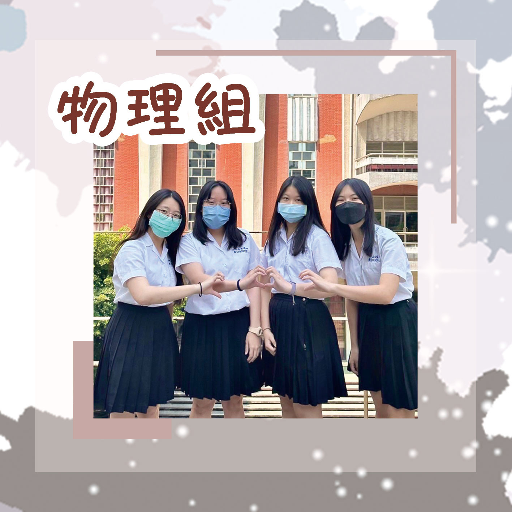
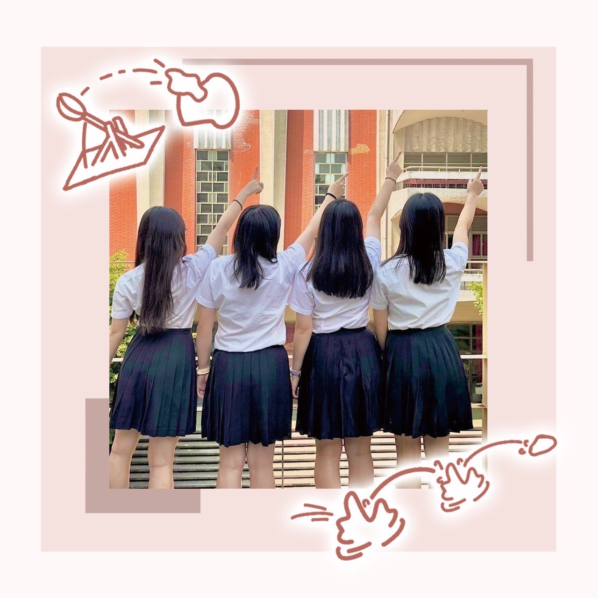
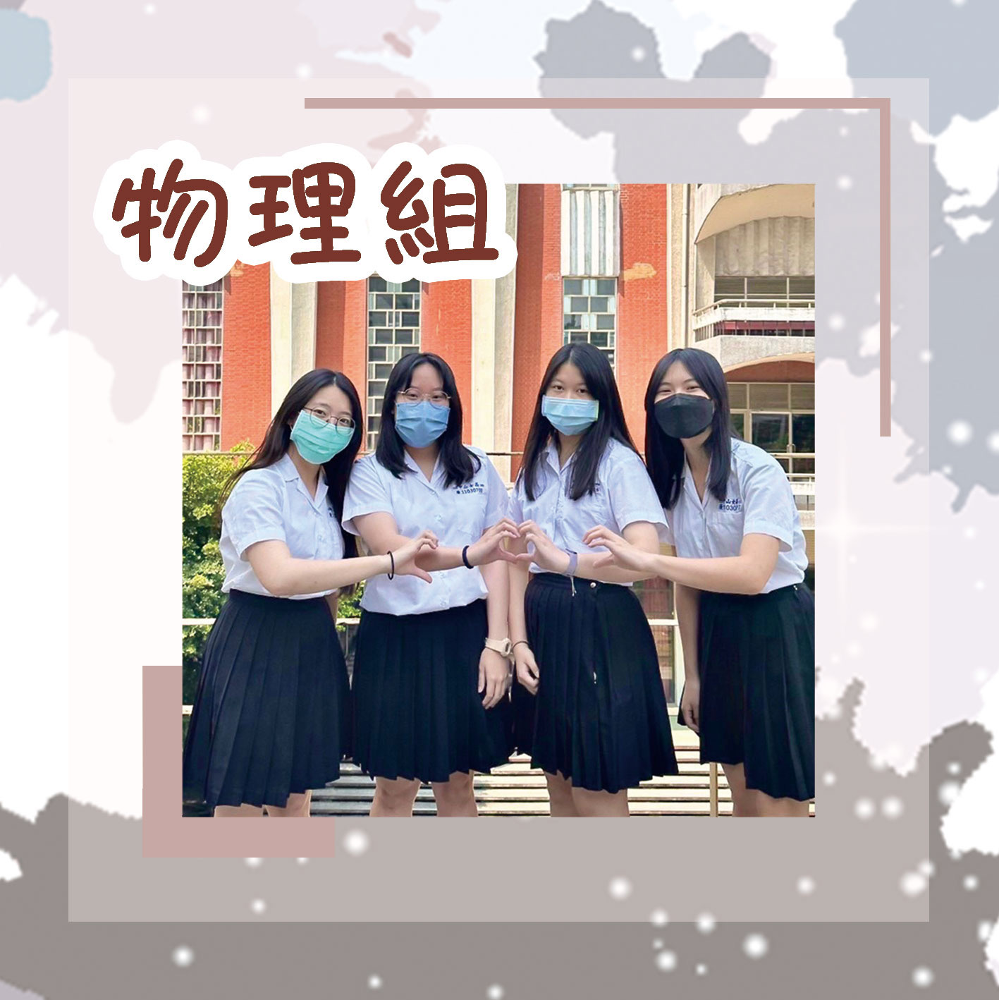
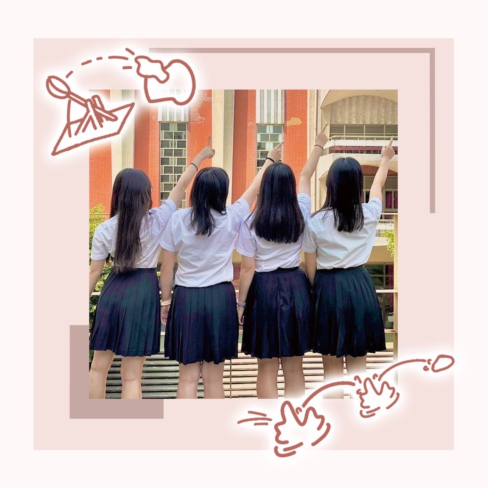

組員：李承羿、張菡珈
「碰碰碰！」「啊！飛太遠了！」「不要掉下來呀！」當你聽到這樣的聲音，一定是來自努力改良發射器的果醬組！發射器總是介於成功與壞掉之間經常快把我們搞瘋了(>﹏<)修修修，終於修好了我們的發射器（＾∇＾）
只要一進到物理實驗室，就可以聞到濃濃的果醬味，那就是來自我們這一組啦！不只如此，還可以看到我們在校園邊走路邊攪拌稀飯呢！
組員：黃心妤、鍾蕎宇
：欸你們專題在幹嘛
：打水漂！
 


